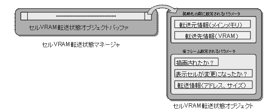

Gfd (graphics foundation) Library in the Nitro System can be used. If the consistency of the API is maintained, it is possible to use the VRAM transfer module implemented by the user.
The example below shows the processing flow until transfer cell animation is detected using the VRAM Transfer State Object.
=========== Initialization Process ===========
1. Initialize the Cell VRAM Transfer State Object Manager (NNS_G2dInitCellTransferStateManager()).
2. Obtain the Cell VRAM Transfer State Object Handle (NNS_G2dGetNewCellTransferStateHandle()),
and initialize the VRAM Transfer Cell Animation (NNS_G2dInitCellAnimationVramTransfered()),
=========== Game Loop ===========
3.Update the transfer state (NNS_G2dSetCellTransferStateRequested()).
4.Update the status of rendered or not (NNSi_G2dSetCellTransferStateCellDrawnFlag()).
5.Update the Cell VRAM Transfer State Object Manager (NNS_G2dUpdateCellTransferStateManager()).
At this point, transfer processing is carried out where necessary using the object.
=========== End Process ===========
6.Cell VRAM Transfer State Object Handles that are no longer in use are returned to the Manager (NNS_G2dFreeCellTransferStateHandle() ).
None.
12/06/2004 Initial version.